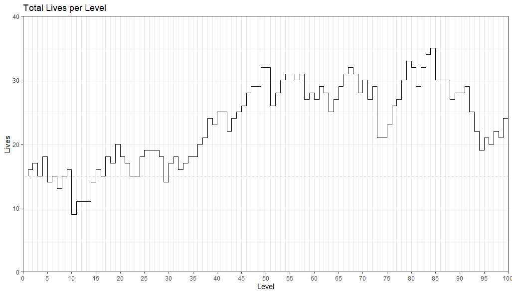
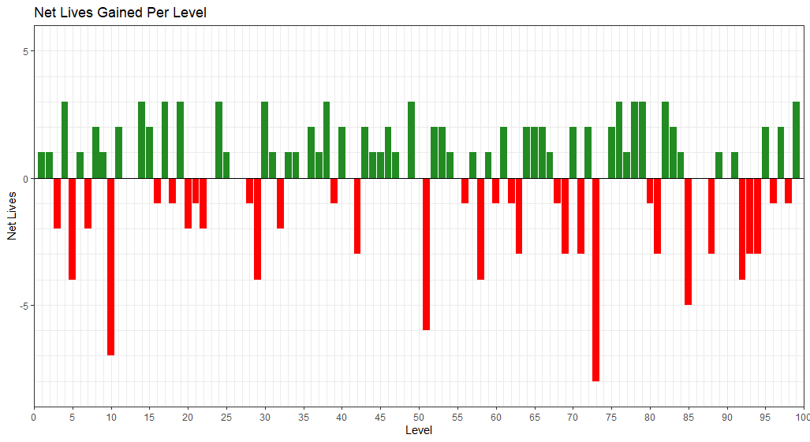
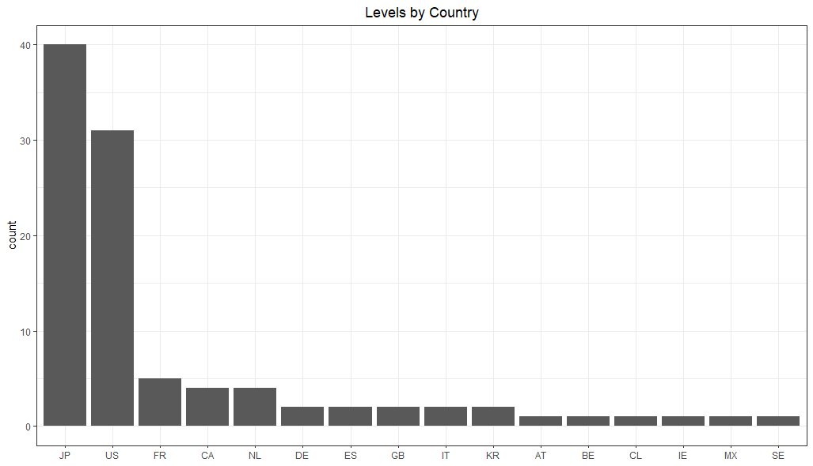
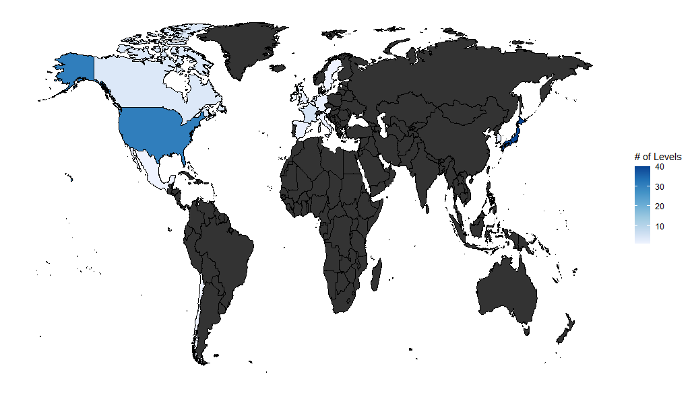
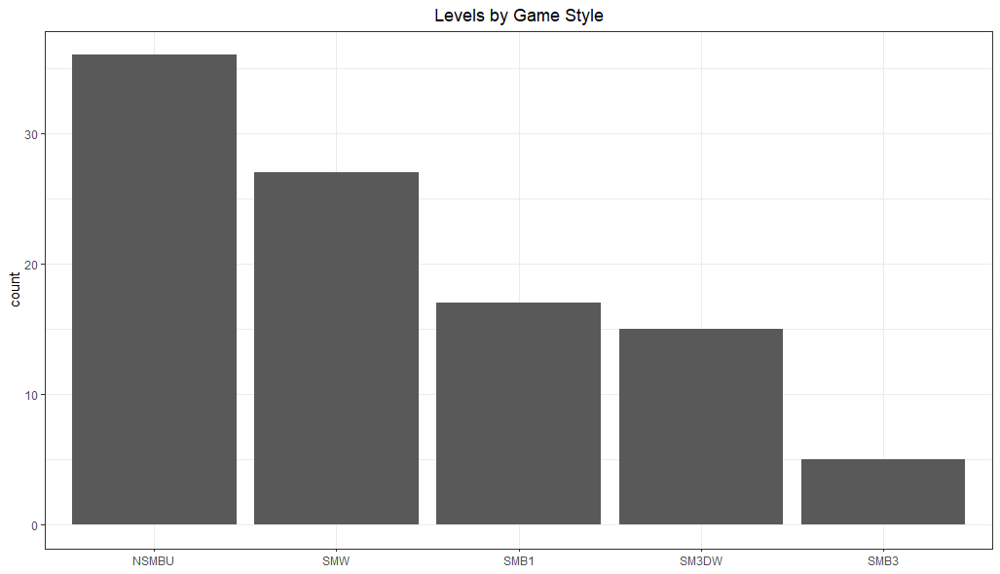
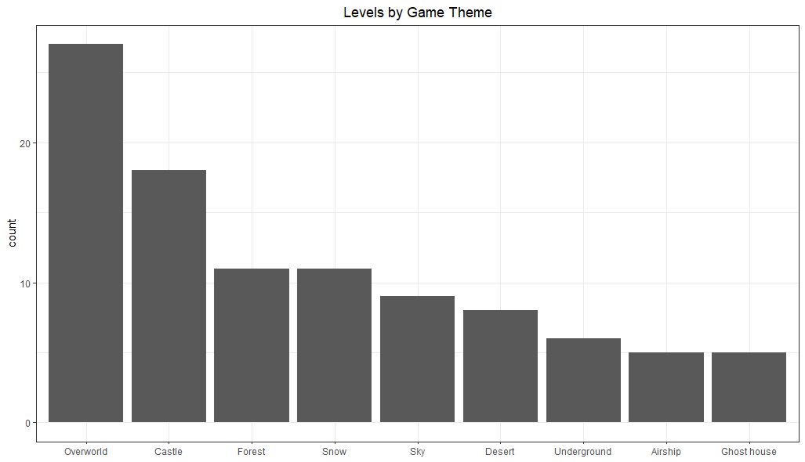
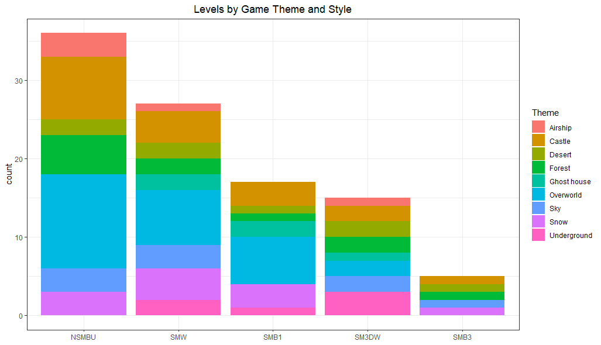
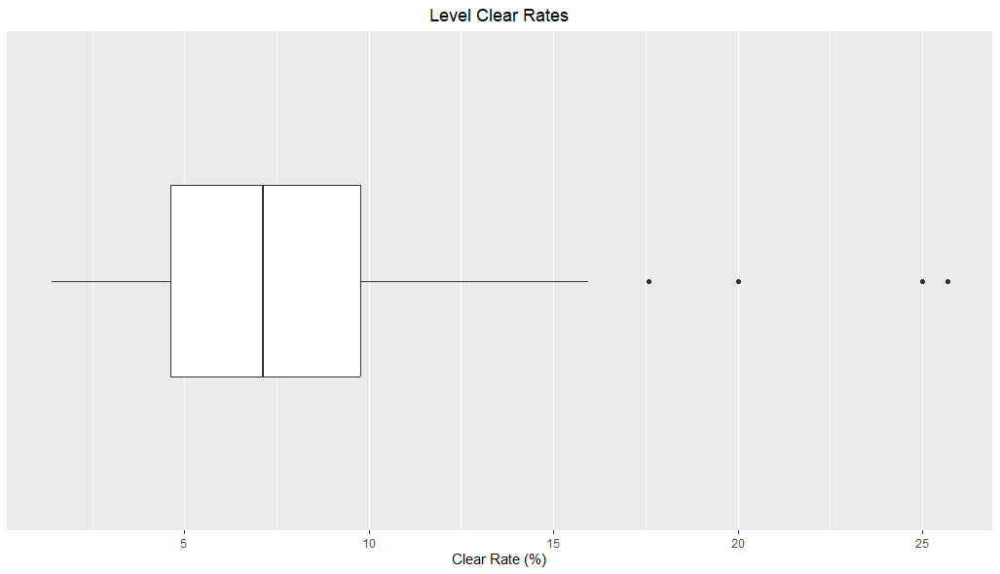

I Beat 100 Expert Mario Levels In A Row (Without Losing)
Introduction
Background Information
In Super Mario Maker 2, there exists a game mode known as Endless. In this game mode,
you will have to beat as many levels created by the entire community chosen at random. With over millions
of levels created, you truly never know what kind of level you are going to get. As the game mode indicates,
you will play an endless amount of levels where the only way for a run to die is if you run out of lives. Furthermore,
the levels are also broken up difficulty. These levels range from Easy where you might
find levels where there are no enemies and no way to die to Super Expert where every level will
be very difficult (some levels being near impossible).
For this analysis, I decided to play Endless Expert, the difficulty beneath Super Expert, as I
find these levels to be the most enjoyable. I decided to challenge myself and see if I could beat 100 levels in
a row without ever running out of lives. In Endless Expert, you start off with only 15 lives.
A very important thing to note is that the lives carry over between levels. This is to say that if I finish a
level with 4 lives, whenever I play the next level I will start with only 4 lives. In addition to this, you
can only gain at most 3 lives per level and even that isn't guaranteed since a maker has the
option to choose if they want to give out levels or not.
Data Collection
The initial data was collected manually but the more detailed statistics were gathered using R and the
TGR API. For the initial data collection, I simply wrote down the Course ID
of the level that I played alongside some other details that an API wouldn't be able to collect such as how many lives I
lost on the level and what rating I gave the level (among other things). Once I had my initial dataframe, I used R to
extrapolate the data using the TGR API.
I went ahead and create a very small GitHub repo where you can
find a copy of the dataframe I collected as well as a .qmd file entitled Endless_Expert_100_Levels_Data.csv
where I show the code I used to format the data. I decided to include this file because there is more data that someone
could collect.
The Data
Lives
The most important aspect of any Endless run are the lives. After all, if you run out of lives, then your
run is over. The first thing I wanted to see was how did my lives fare throughout my entire run.

With this image, we can see just how much our lives fluctuated. An interesting observation would be that the
graph only extends to 40 lives. 40 is not the limit for how many lives a player can get during
Endless mode. In fact, the limit is 99 lives. Throughout these 100 levels though, I didn't get close to 99 and
having the graph extend that high would lead in a lot of unused space. I also included a faint green line at
the 15 life mark. This is because as mentioned before, every Endless Expert run begins with 15 lines. I thought
it would be interesting to use that as a baseline.
Another way to look at how our lives fluctuated is with the following graph:

This graph doesn't really add any new information that can't be deduced from the previous graph, but I find that
it's very nice to look at! In addition, you can also use it to see which levels caused me the most pain (i.e.
which levels cost me the most lives). In this example, it appears that Level 73 was the level in which I died
the most at. Doing a quick lookup in R, we can get more details about that very level.
Level 73: "Don't hug me I'm TROLLED!" (NX5-BF0-0VG)
This is the level that I suffered the most at and cost me 8 precious lives. If you would like to view the
level, you can use an online SMM2 viewer to take a look.
Here's a great one -
Wizulus' Online Viewer.
Geographic Data
I mentioned earlier that levels are created by people all over the world. And this is true! The way the game works is anybody can create a level, and upon completion, the level will be added to the SMM2 database for anyone in the world to download and play within seconds! As the guy from Pallet Town would say, technology is so cool. Anyways, while playing, it definitely felt like I was playing more levels from Japan compared to other countries. I wasn't sure if it was a case of recency bias, so I went ahead and took a look at the numbers.  From this histogram, we can ckearky see that I definitely played more levels from Japan compared to any other country -- even more than the United States! Something I love about this graph is that you can see just how diverse the community is. It's important to remember that my sample size is very small with only 100 levels, yet we are still able to play levels from a diverse number of countries. In fact, let's take a look at a map.  To be honest, I think this is one of those instances where less and more. While the map is cool to look at, with such a small sample, there really isn't a whole lot to look at. I think the histogram would be a better visualization.
Level Design
This is a good moment to take a step back and actually think about how these levels are created in the
first place. The way the game works is you first have to choose between 5 different game styles.
These game styles are based off different versions of the game ranging as far back to the original
Super Mario Bros. game style. Each style varies in not only visually, but, with each game mode there
are slightly different mechanics that may not be possible in other game modes. For example, in the
Super Mario Bros. (SMB1) style, you are not able to hold items. In every other game mode, you can.
Choosing the style is very important to what type of level you want to create.
In addition to styles, we also have themes. Themes basically represent the aesthetic of the level.
Depending on what kind of level you want to create, choosing the right theme can lead to a better player
experience. For more information on themes and styles, I would highly recommend taking a look at the
Wiki.
With that basic info out of the way, we can now move on with the data. Out of curiousity, I wanted to see
if there was one type of theme or style that was more popular than the rest. First we can take a look at styles.

With this histogram we can see that there is not an even distribution within the game styles. NSMBU (New Super Mario
Bros. U), is the most popular with SMB3 (Super Mario Bros. 3) being the least popular. This could be due to the fact
that NSMBU offers more advanced movement which can lead to more exciting levels.

Similar to the last plot, this data is also not evenly distributed. We can see that the Overworld and Castle theme
were selected more often than the other themes. I believe this could be due to the fact that these two themes
are probably the most recognizable to most people. For example, if we look back to the original Mario games
that we played, we are most likely going to remember the first level and the last level. The first level is
pretty much always a standard Overworld themed level to help introduce the player to the game while the last level is
a castle level in which we take on Bowser. Due to recognizability and nostalgia, it makes sense for players to
gravitate towards these themes.
Now, just for fun, we can make a stacked plot to see how the game stlyes break down by theme.

Personally, I'm not a huge fan of stacked plots with so many categories but I couldn't help but include it due
to the pretty colors!
Miscellaneous Data
While we alraedy covered some of the main topics that inspired me to do this analysis, there were also quite a few smaller data pulls that I did with the data just out of curiousity. A lot of these don't require long write-ups so I figured I would simply bunch them up into one section.
Positive or Negative Reaction
Whenever you complete a level, you have the ability to reward the level with a Heart signifying that you loved the level, or, you can also give them a Boo which is represented by a broken heart and signifies that you really didn't like the level. You are also given the option to not vote at all and just move on. While doing my run, I also made sure to record my ratings for each level.| Rating | Count |
|---|---|
| Heart | 29 |
| No Vote | 56 |
| Boo | 15 |
This level got me thinking about my emotions and if I am a reactive player. To try to determine this, I went ahead and took the average net lives based on rating to see if there were any interesting observations.
| Rating | Mean Net Lives | Standard Deviation | Median Net Lives |
|---|---|---|---|
| Heart | 0.828 | 1.947 | 1.0 |
| No Vote | 0.125 | 2.208 | 0.5 |
| Boo | -1.467 | 3.020 | -1.0 |
Clear Efficiency
Another thing that the game tracks is who has completed the course the fastest. If you complete the level the
fastest out of everyone that has attempted it, you will have the World Record on it. Out of the 100 levels
that I played, I was able to get the World Record on 12 of them. This was surprising to me
given the fact that I never really go for speed when playing these levels. I try to play in a cautious manner
as a way to prevent myself from losing lives in a reckless fashion.
It is also possible for levels to exist that nobody has ever beaten before. These are called Uncleared Levels
and there are hundreds of thousands of these in the game. I plan on making a different analysis using that data.
During my run, I was able to beat 4 Uncleared Levels. I soon realized that for every uncleared level that I beat,
I also automatically receive the World Record on it since I am the only person to have beaten it.
This is to say that if we want to be nitpicky, we can say that I only got the World Record on 8
levels since some people might not cound beating Uncleared Levels as getting the World Record. All of this can
be summarized in the following table.
| First Clear | World Record | Count |
|---|---|---|
| TRUE | TRUE | 4 |
| FALSE | TRUE | 8 |
| FALSE | FALSE | 88 |
Level Difficulty
Finally, I was always curious to know just how difficult Expert levels were. To do this, we can take a look at something known as the Clear Rate. The Clear Rate simply takes the total number of people that have beaten a level and divides it by the total number of times the level has been attempted. 
| Mean | Standard Deviation | Median |
|---|---|---|
| 7.851 | 4.644 | 7.14 |
I went ahead and foundd the level with the highest Clear Rate and came up with the following
Level 98: "Houston , we have a problem." (MY7-C65-SHF)
Wizulus' Online Viewer.
This level has a Clear Rate of 25.69%! Personally, I don't think that it belongs in Endless Expert but that is not up to us. The methodology that goes into picking the difficulty for a level is something that is still not quite undersood.
Closing Remarks
That was a fun little glance into just a few levels from Super Mario Maker 2. There is a lot more data that I could have analyzed from my dataset such as the amount of plays a level has and what are the overall ratings amongst the sample but I feel like that would be a bit too much. As I mentioned at the beginning, I have uploaded a .csv file with all the data that I used for these visualizations.In the future, I plan on trying to complete an Endless Expert run in which I complete 1,000 levels without ever skipping. That will take a long time to curate but I am currently working on a Python program that will automatically track my data so that I don't have to do any manual typing. This will definitely help save time and will also allow other creators to also collect data in a simple way. Feel free to check back to see if I have completed it.